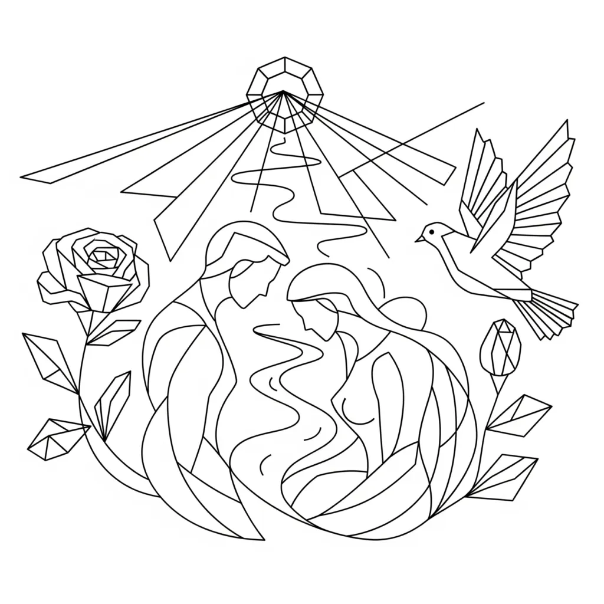

"Therefore shall a man leave his father and his mother, and shall cleave unto his wife: and they shall be one flesh.”. — Genesis 2:24
To the literalist, this verse is about marriage. But to one who sees as Neville Goddard saw, it is about consciousness and union—not between two people, but between your awareness and the state you assume. This verse unveils the spiritual law of manifestation, and it happens in a garden—the inner Eden of imagination.
And just as Genesis opens in a garden of union, so too does the Song of Solomon celebrate love in a garden—a garden that symbolises the realised state. One is the act of assuming. The other is the joy of fulfilment.
Leaving the Old Identity
“A man shall leave his father and mother...”
This is not about abandoning parents. It is the departure from inherited thinking—from the old identity shaped by external influences, assumptions, and fear.
In Neville’s terms, “father and mother” are your past beliefs—what you thought you were because of culture, history, or memory. To “leave” them is to detach from the emotional atmosphere of the old state.
The Garden of Eden is the setting for this transformation because Eden is the place of pure imagination—the inner creative realm untouched by outer reasoning. This is where the new state is chosen.
Cleaving to the Desired State
“...and shall cleave unto his wife...”
The “wife” is not a person—it is your chosen inner state. To cleave is to emotionally attach, to persist, to remain.
You marry the feeling of already being the one you want to be. You enter into conscious union with that reality. Just as Adam cleaves to the woman drawn from his own being, you cleave to a world that comes from your own imagination.
In the Song of Solomon, this same union is described through the language of love and longing:
“Let my beloved come into his garden, and eat his pleasant fruits.”
— Song of Solomon 4:16
This is the garden of assumption realised. The lover enters the garden not as a seeker, but as one who now enjoys the fruit of what has already been conceived within.
Seeking Before Union: The Longing of the Bride and Tamar’s Story
Before union and manifestation, there can be a period of longing and searching. The bride in the Song of Solomon expresses this yearning when she says,
“I sought him, but found him not; I called him, but he gave no answer.”
— Song of Solomon 3:1
Her restless seeking in the streets parallels the story of Tamar in Genesis 38. Like the bride’s pursuit, Tamar’s boldness to claim her place despite rejection resulted in the birth of Perez—a symbol of breakthrough and divine inheritance. This narrative highlights the spiritual reality that before full union (“one flesh”) is realised, there is sometimes a necessary journey of desire, claim, and persistence.
And They Shall Be One Flesh
In Genesis, the result of cleaving is oneness: the two become “one flesh.” This is not metaphorical union—it is manifested identity.
The state and the self become indistinguishable. The outer world begins to mirror the inner state perfectly. Neville often said, “You are always self-persuaded.” When you are fully persuaded that you are now the thing hoped for, the world cannot help but conform.
The garden in Song of Solomon shows what that looks like:
“I am come into my garden, my sister, my spouse...”
— Song of Solomon 5:1
The desired state no longer lies in the distance. It surrounds you. It speaks back. You are in it, as it was once in you. The marriage has borne fruit, and the garden now sings.
The Garden as Creative Realm
The Garden of Eden is where man meets woman—where awareness meets assumption. And in the Song of Solomon, we return to this garden—only now, it overflows with life.
“Awake, O north wind; and come, thou south; blow upon my garden, that the spices thereof may flow out.”
— Song of Solomon 4:16
This is not about seasonal change—it is the call for the movement of life, the breath of manifestation. The winds represent the activity of Spirit animating what has been sown in imagination.
You do not plant seeds and then stare at the soil in doubt. You release them and allow the garden to bring forth.
Final Reflection: The Law and the Song
Genesis 2:24 gives you the law: detach from the old, cleave to the new, become one with your chosen state.
The Song of Solomon gives you the song: the felt experience of your union fulfilled—love made visible, the garden alive with your assumption’s fruit.
Both happen in a garden.
Both are about love.
Both describe you.
“I am my beloved’s, and my beloved is mine: he feedeth among the lilies.”
— Song of Solomon 6:3
This is the joy of one who no longer seeks, but rests in union. The garden is no longer something lost—it is the life you now inhabit. Because you dared to leave the old, cleave to the new, and become one with it.
About The Author | Bride — Bridegroom Series | Genesis 2:24 Series | Marriage Series | Song of Solomon Series